Deploy a Docker application on Google Cloud Platform
This tutorial is a follow-up to the Docker tutorial. Make sure you have completed it before starting this one. We will deploy the dockerized MNIST application (API + Gradio interface) to Google Cloud Platform.
0. Prerequisites
Make sure you have completed the Docker tutorial and have the MNIST project ready.
You can download the full solution here to be sure to have something working before starting this tutorial.
Make sure that you can run the application locally before starting this tutorial.
docker-compose up
You should be able to access the Gradio interface at http://localhost:7860 and the API at http://localhost:5075.
1. Google cloud account and free coupon code
Click on the link sent by email to redeem your free coupon code (you must use your INSA mail address to redeem it). Once you have your coupon code, go to this link to get your credits (you will need a Google account, if needed, you can create one using your INSA mail address). 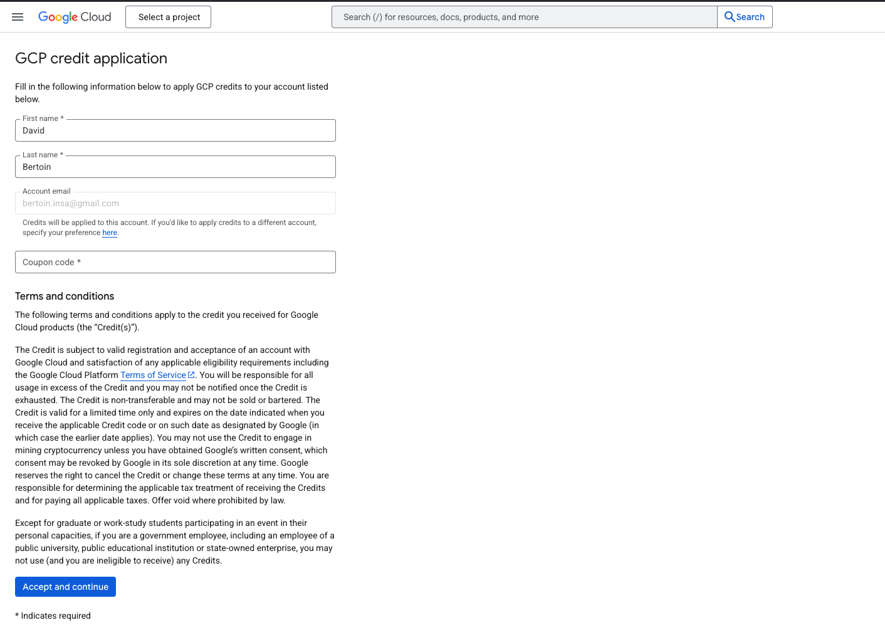
2. Create a new instance
On the GCloud homepage, click on the side bar menu on the left and select "Compute Engine" -> "VM instances".
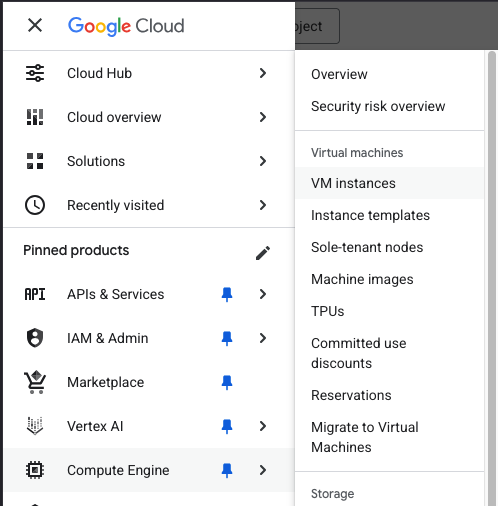
Then click on the "Create project button", and create a project named AIF. No need to fill in the other fields.
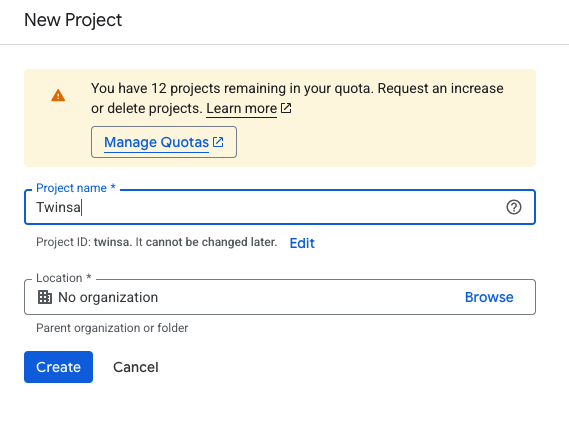
You should arrive at the following page, click on "Enable API"
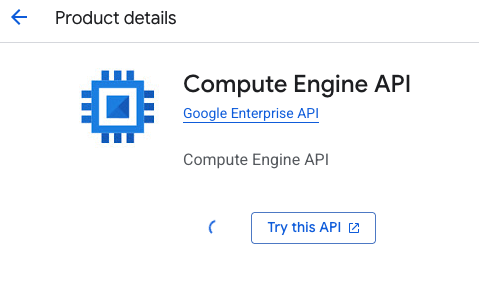
You should now see a page proposing to create a new instance. Click on "Create instance".
Fill in the following fields in Machine configuration section:
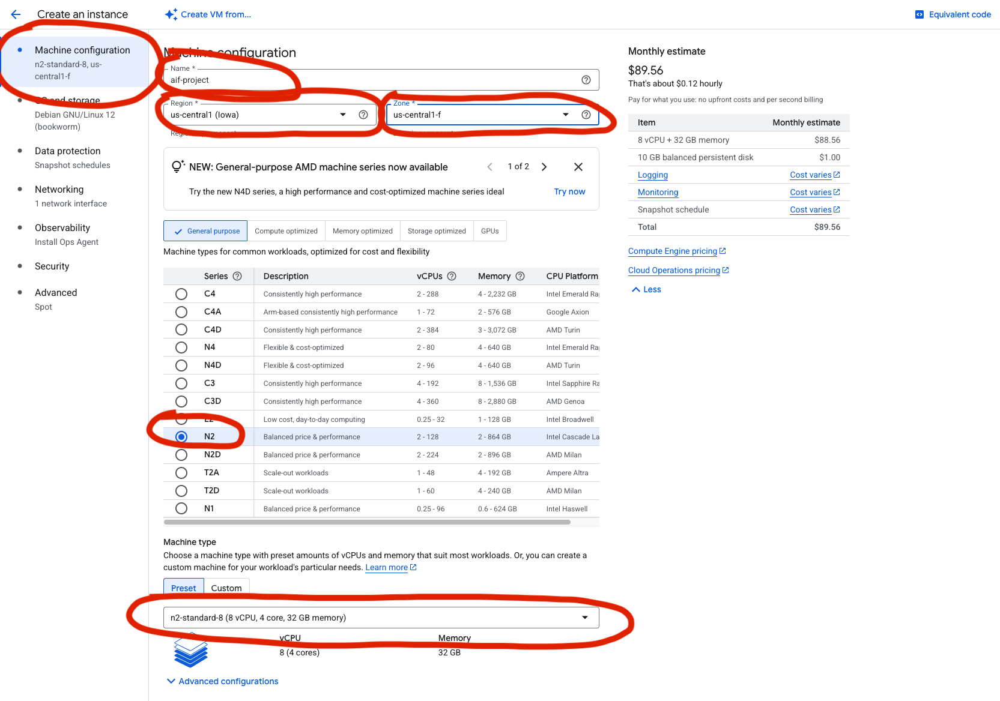
Then in the OS and Storage section,
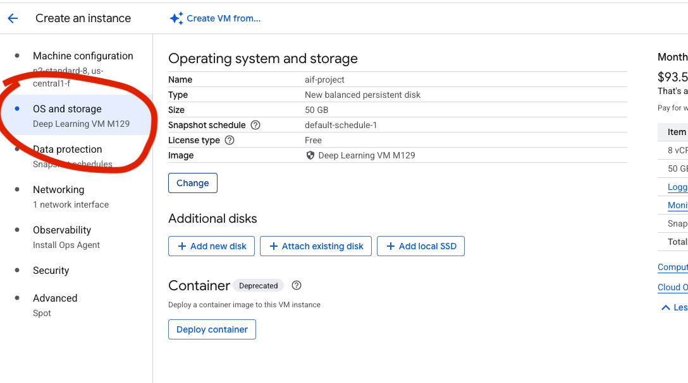
click on the "Change" button and select "Deep Learning in Linux" and select the first option.
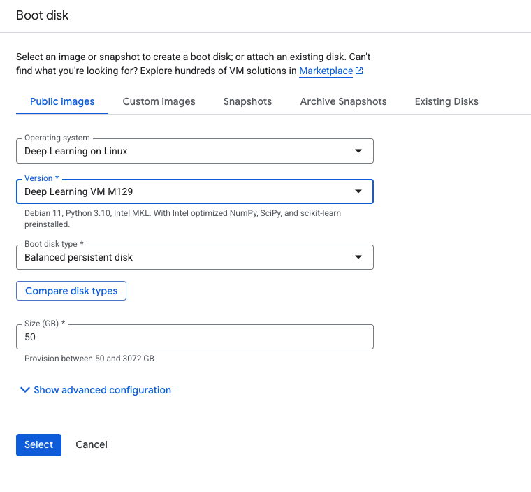
Then in the Networking section, set the following fields:
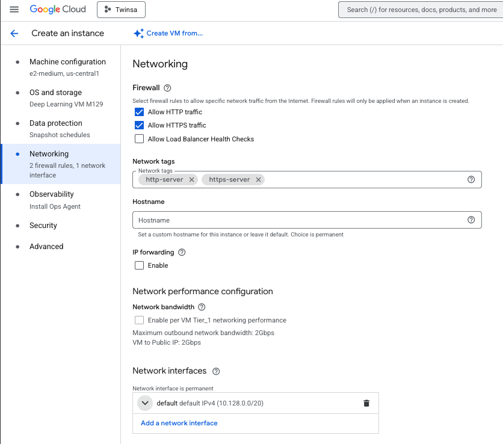
In this same Networking section under Network interfaces, click the ▾ arrow next to
default default IPv4 (10.128.0.0/20).
We will also use spot instances to save money. Spot instances are instances that are available at a lower price than on-demand instances, but are not guaranteed to be available. They are a good way to save money, but you should be aware that they can be interrupted at any time.
On the Advanced section, set the following fields to use spot instances and automatically stop the instance when it is not in use:
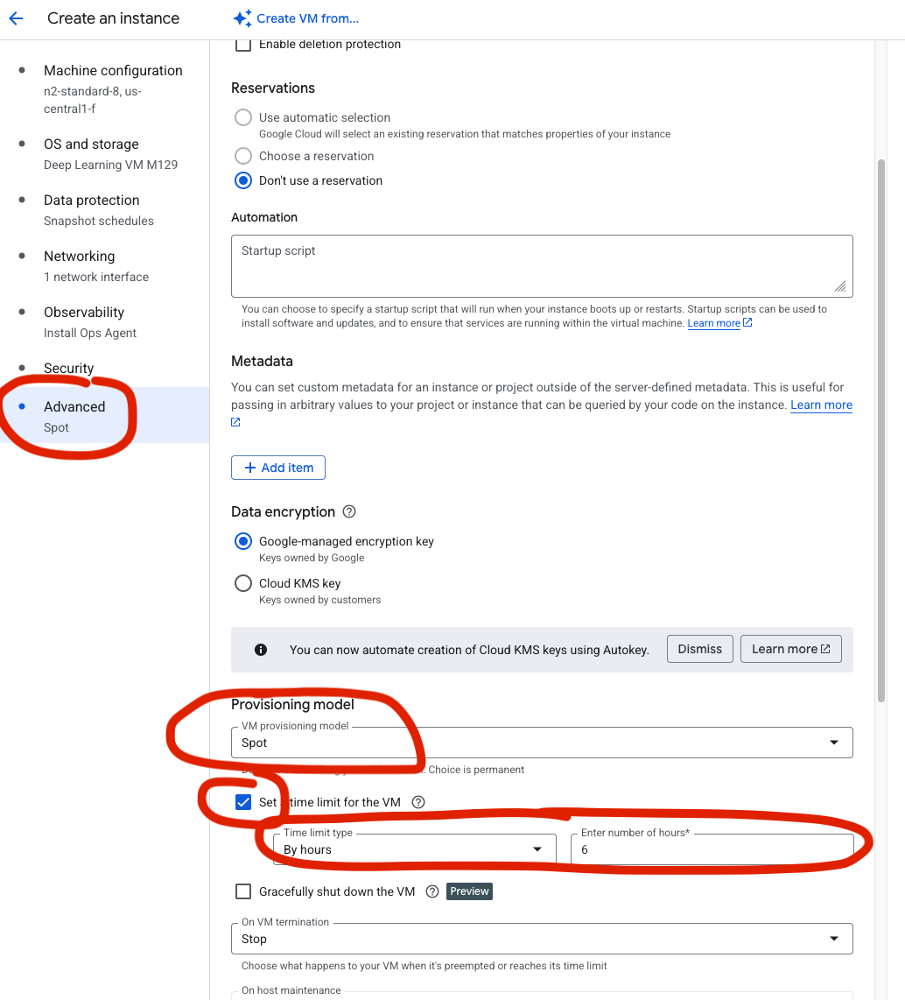
Find External IPv4 address dropdown and select Reserve static address.
Give it a name like docker-mnist-static-ip and click on Reserve.
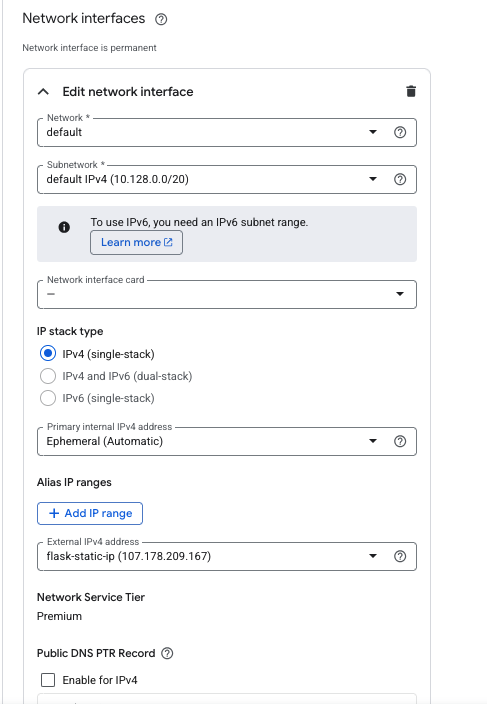
Then click on the "Create" button to create the instance.
3. Install the GCloud SDK on your local machine
Now install the GCloud SDK on your local machine. Follow the instructions here.
Once the GCloud SDK is installed, run the following command to initialize it:
gcloud init
This will guide you through the process of setting up your GCloud SDK. You will need to authenticate with your Google account and set a default project (Twinsa in our case). No need to set a default region.
4. Connect to your instance
Once your instance is created, you can find its name in the VM instances list on the Google Cloud Platform console.
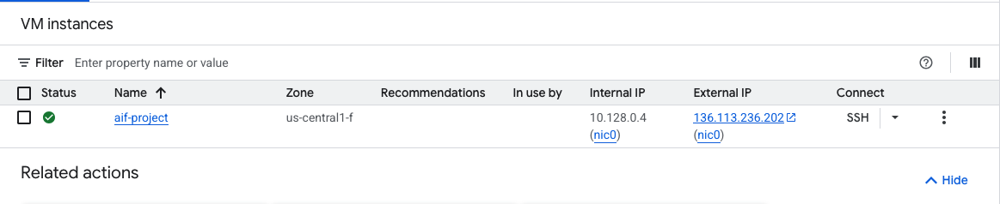
You can connect to it using the following command:
gcloud compute ssh --zone "us-central1-f" "aif-project"
or if your instance name or/and region are different:
gcloud compute ssh --zone "region" "your_instance_name"
(replace your_instance_name and region with the actual instance name and region)
You can also directly get the command to connect to your instance by clicking on the arrow next to the "SSH" button in the Google Cloud Platform console and then "view gcloud command".
You should now be connected to your instance and see its terminal.
5. Install Docker on the instance
On the instance terminal, run the following commands to install Docker:
sudo apt-get update
sudo curl -SL https://github.com/docker/compose/releases/download/v2.40.3/docker-compose-linux-x86_64 -o /usr/local/bin/docker-compose
sudo chmod +x /usr/local/bin/docker-compose
sudo systemctl start docker
sudo systemctl enable docker
Verify Docker is installed correctly:
sudo docker --version
sudo docker-compose --version
6. Prepare your local project
Make sure your local MNIST project (from the Docker tutorial) has the following structure:
mnist-docker-app/
├── Dockerfile-api
├── Dockerfile-gradio
├── docker-compose.yml
├── requirements-api.txt
├── requirements-gradio.txt
├── mnist_api.py
├── mnist_gradio.py
├── weights/
│ └── mnist_net.pth
└── (other files from your MNIST project)
Before deploying, we need to configure the firewall to allow traffic on the ports used by our application.
7. Configure firewall rules
On your local machine terminal (not on the instance), run the following commands to allow incoming traffic on ports 5075 (API) and 7860 (Gradio):
gcloud compute firewall-rules create allow-mnist-api --allow tcp:5075
gcloud compute firewall-rules create allow-mnist-gradio --allow tcp:7860
8. Deploy by copying files directly
We will now deploy our application by copying the files to the instance.
On the instance terminal, run the following command to get your current working directory:
pwd
This gives you the path to the home directory of the user on the instance. You should see something like /home/your_username.
Now on a separate terminal on your local machine, navigate to your MNIST project directory and run the following command to send the folder to the instance:
gcloud compute scp --recurse --zone "us-central1-f" "." "aif-project":/home/your_username/mnist-docker-app
Remember to replace us-central1-f with the actual region and aif-project with the actual instance name if it is different.
Then on the instance terminal, go to the folder:
cd mnist-docker-app
Now start the application using docker-compose:
sudo docker-compose up -d
The -d flag runs the containers in detached mode (in the background).
Now go to the Google Cloud Platform console to get the external IP address of your instance. 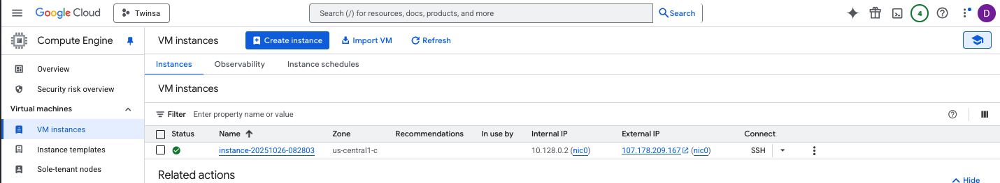
You should now be able to access:
- The Gradio interface at http://your_instance_ip:7860
- The API at http://your_instance_ip:5075
Test the Gradio interface by drawing a digit and checking if it gets predicted correctly.
If you want to make changes to your application, simply modify the files on your local machine and repeat the gcloud compute scp command to copy the updated files to the instance. Then restart the containers:
sudo docker-compose down
sudo docker-compose up -d
9. Deploy using Docker images
Instead of copying all the source files and building on the instance, we can build Docker images locally and transfer them to the instance. This approach is more efficient, especially for larger applications.
Step 1: Build images locally
On your local machine, navigate to your MNIST project directory and build the Docker images (we will use the --platform=linux/amd64 flag to build the images for the amd64 architecture. This is mostly useful for Macos users that are using an M chips and are by default building for the arm64 architecture):
sudo docker build --platform=linux/amd64 -f Dockerfile-api -t mnist-flask-app:latest .
sudo docker build --platform=linux/amd64 -f Dockerfile-gradio -t mnist-gradio-app:latest .
Verify the images were created:
sudo docker image ls
You should see both mnist-flask-app and mnist-gradio-app in the list.
Step 2: Save images to tar files
Save the Docker images as tar files that can be transferred (for Windows users, you might need to use PowerShell or Git Bash to run these commands):
sudo docker save mnist-flask-app:latest | gzip > mnist-flask-app.tar.gz
sudo docker save mnist-gradio-app:latest | gzip > mnist-gradio-app.tar.gz
These compressed tar files contain everything needed to run the containers, including all dependencies and your code.
Step 3: Transfer images to the instance
Use gcloud compute scp to transfer the image files to your instance:
gcloud compute scp --zone "us-central-f" mnist-flask-app.tar.gz aif-project:/home/your_username/
gcloud compute scp --zone "us-central-f" mnist-gradio-app.tar.gz aif-project:/home/your_username/
We can now update the docker-compose.yml file to use the images instead of building them on the instance.
Replace the build section with the image section:
version: '3.8' # specify docker-compose version
services: # services to run
api: # name of the first service
image: mnist-flask-app:latest
ports:
- "5075:5075" # specify port mapping
gradio-app:
image: mnist-gradio-app:latest
ports:
- "7860:7860" # specify port mapping
depends_on:
- api # specify service dependencies
Now transfer the docker-compose.yml file:
gcloud compute scp --zone "us-central-f" docker-compose.yml aif-project:/home/your_username/
Step 4: Load images on the instance
Connect to your instance:
gcloud compute ssh --zone "us-central-f" "aif-project"
Load the Docker images from the tar files:
sudo docker load < mnist-flask-app.tar.gz
sudo docker load < mnist-gradio-app.tar.gz
Verify the images are loaded:
sudo docker image ls
You should see both images listed.
Step 5: Run the application
Start the application using docker-compose:
sudo docker-compose up -d
Check that the containers are running:
sudo docker-compose ps
Your application should now be accessible at:
- The Gradio interface at http://your_instance_ip:7860
- The API at http://your_instance_ip:5075
Step 6: Updating the application
When you make changes to your application, follow these steps:
- On your local machine, rebuild the images:
sudo docker build --platform=linux/amd64 -f Dockerfile-api -t mnist-flask-app:latest .
sudo docker build --platform=linux/amd64 -f Dockerfile-gradio -t mnist-gradio-app:latest .
- Save the updated images:
sudo docker save mnist-flask-app:latest | gzip > mnist-flask-app.tar.gz
sudo docker save mnist-gradio-app:latest | gzip > mnist-gradio-app.tar.gz
- Transfer to the instance:
gcloud compute scp --zone "us-central-f" mnist-flask-app.tar.gz aif-project:/home/your_username/
gcloud compute scp --zone "us-central-f" mnist-gradio-app.tar.gz aif-project:/home/your_username/
- On the instance, stop the containers, load the new images, and restart:
sudo docker-compose down
sudo docker load < mnist-flask-app.tar.gz
sudo docker load < mnist-gradio-app.tar.gz
sudo docker-compose up -d
Cleanup local tar files
After successful deployment, you can delete the tar files to save disk space:
On your local machine:
rm mnist-flask-app.tar.gz mnist-gradio-app.tar.gz
On the instance:
rm mnist-flask-app.tar.gz mnist-gradio-app.tar.gz
Why using Docker images instead of copying files?
Building Docker images and transferring them to the instance provides several advantages: - Faster deployment: No need to rebuild on the instance and the instance doesn't need to download and compile dependencies (the image is already built and ready to run) - Consistent builds: The exact same image that works on your local machine runs on the instance - Easier troubleshooting: If it works locally, it will work on the instance
10. Troubleshooting
Here are common issues you might encounter and their solutions:
Firewall Issues
Problem: Cannot access the application via external IP.
Solution:
- Verify the firewall rules were created: gcloud compute firewall-rules list
- Make sure the rules allow tcp:5075 and tcp:7860
- Check if the containers are running on the instance: sudo docker-compose ps
SSH Connection Problems
Problem: Cannot SSH into the instance.
Solution:
- Verify the instance is running in the GCP console
- Check your zone is correct (should be us-central-f)
- Try adding --verbosity=debug to the SSH command to see detailed error messages
- Make sure your gcloud SDK is authenticated: gcloud auth list
Docker Issues
Problem: Docker commands fail or containers don't start.
Solution:
- Verify Docker is installed: sudo docker --version
- Check Docker service status: sudo systemctl status docker
- View container logs: sudo docker-compose logs
- Restart Docker service: sudo systemctl restart docker
- Check disk space: df -h (Docker images can take a lot of space)
Port Already in Use
Problem: Error message "Address already in use" when starting containers.
Solution:
- Stop all running containers: sudo docker-compose down
- Check if processes are using the ports: sudo lsof -i :5075 and sudo lsof -i :7860
- Kill the processes if needed: sudo kill -9 <PID>
File Transfer Issues
Problem: gcloud compute scp fails or is very slow.
Solution:
- Check your internet connection
- Verify the instance name and zone are correct
- For large files, consider using compression: tar -czf before transfer
- Check disk space on both local machine and instance: df -h
Missing Model Weights
Problem: API fails with "model file not found" error.
Solution:
- Make sure the weights/ directory and mnist_net.pth file exist in your local project
- Verify the model path in Dockerfile-api matches your actual file location
- When using the file copy method (Section 8), ensure the weights folder is copied: check with ls -la mnist-docker-app/weights/ on the instance
- When using Docker images (Section 9), the weights are included in the image. Verify the image was built correctly and loaded on the instance
Containers Build but Don't Communicate
Problem: Gradio interface cannot connect to the API.
Solution:
- Verify both containers are running: sudo docker-compose ps
- Check the API URL in mnist_gradio.py is set to http://api:5075/predict
- Make sure the depends_on directive is in the docker-compose.yml
- Check logs for both services: sudo docker-compose logs
Out of Disk Space
Problem: Cannot build images or load images due to insufficient disk space.
Solution:
- Remove unused Docker resources: sudo docker system prune -a
- Check disk usage: df -h
- Remove old images: sudo docker image prune -a
- Delete the tar.gz files after loading images: rm *.tar.gz
- Consider increasing the instance's disk size in GCP console
Docker Images Not Loading
Problem: docker load command fails or doesn't show the image.
Solution:
- Verify the tar.gz file is not corrupted: check file size with ls -lh
- Make sure you used gzip when saving: docker save ... | gzip > file.tar.gz
- Try decompressing first: gunzip mnist-flask-app.tar.gz then docker load < mnist-flask-app.tar
- Check Docker service is running: sudo systemctl status docker
11. Cleanup
To cleanup, you can stop the Docker containers and the instance:
On the instance terminal:
# Stop containers
sudo docker-compose down
# Remove Docker images (optional)
sudo docker image rm mnist-flask-app:latest mnist-gradio-app:latest
# Remove tar files
rm mnist-flask-app.tar.gz mnist-gradio-app.tar.gz
You can stop the instance from the Google Cloud Platform console. You can delete it if you want to completely remove it, but you might want to keep it for your project since it is configured now. If you choose to keep it, you can start it again later.
12. Do not forget to stop the instance!!!
Always remember to stop the instance when you are not using it to avoid unnecessary charges. You have a limited $50 credit so be careful with your usage.